<HTML><BODY>
<CENTER>
<TABLE WIDTH=640 BACKGROUND="header.gif">
<TR><TD HEIGHT=82>&nbsp &nbsp<A HREF="index.html"></A></TD></TR></TABLE>
</BODY></HTML><HTML>
  <HEAD>
   <TITLE>Translated instructions for Devilgotchi</TITLE>
   <STYLE TYPE="text/css">
   <!--
     P    {text-align: left  }
   -->
    </STYLE>
  </HEAD>
  <BODY BACKGROUND="stars.gif" bgproperties="fixed">
    <CENTER>
    <TABLE WIDTH=640 BACKGROUND="devil/dback.gif" BORDER=2px BORDERCOLOR="#669966">
<TR>
      <TD><FONT FACE="comic sans ms" COLOR="#333333"><HR>
      <CENTER>Devilgotchi Growth Chart and Secret Character Info is <A HREF="devinfo.html">here</A></CENTER><HR><BR>
      <P>Just a quick note, the generic term for a Devilgotchi character (whether it be Devil-mametchi or whatever) is Deviltchi (little devil).</P>
    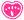<h3>The check meter</h3>
    <P>The check meter tells you several things.<BR><BR>
      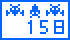  The first screen tells you how many days your Deviltchi has been on Earth<BR><BR>
      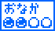  The second screen shows how hungry your Deviltchi is<BR><BR>
      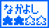  The third screen shows how happy your Deviltchi is <BR><BR>
      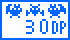  The fourth screen shows how much "devil power" your deviltchi has (You want this to be a lower number)</P>
    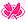<h3>Meals</h3>
    <P>This icon gives you two options to feed your deviltchi.  The top option is pie - this will fill one hungry circle.  The bottom option is chocolate - it will fill one happy star.<BR>
    <CENTER>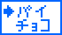    &nbsp &nbsp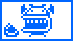</CENTER></P>
    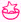<h3>Happiness-up game</h3>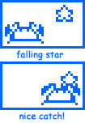
    <P>This icon will take you to the game.  The object is the drop the star so that the Deviltchi will catch it in its mouth as it moves across the screen.  Pressing the A button will make the star fall from the top left corner of the screen and pressing the B button will cause it to fall from the top right corner.  To win the game, you have to get at least 3 stars in the Deviltchi's mouth.  This will fill one happy star and decrease the DP number.  If you manage to get all four stars in, you will fill 2 happy stars.</P>
    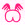<h3>Toilet</h3>
    <P>Use this icon to clean up after your Deviltchi<BR>
    <CENTER>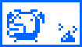  &nbsp &nbsp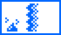</CENTER></P>
    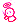<h3>Kamidanomi</h3>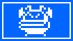
    <P>This icon is to be used if your Deviltchi starts acting naughty.  You'll know when your Deviltchi has done something bad because the screen will go black and the deviltchi will appear in white.  Using this icon will decrease the DP (the higher the DP, the more likely your Deviltchi is to do something bad) *some of the bad things a Deviltchi will do: won't let you see the check meter screens, throw pie back when you try to feed it, pretend to eat chocolate, pretend to fall asleep while playing the game, won't let you clean off the screen (use the toilet icon)</P>
    </TD>
   </TR>
   <TR><TD ALIGN=center><A HREF="devilgotchi2.html">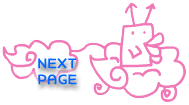</A></TD></TR>
  </TABLE>
 </BODY>
</HTML>
<HTML><BODY>
<CENTER>
<TABLE WIDTH=640 BACKGROUND="footer.gif">
<TR><TD HEIGHT=58><CENTER><A HREF="index.html"></A></TD></TR></TABLE>
</BODY></HTML>
